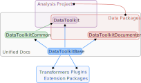

Introduction
DataToolkit is a batteries-included family of packages for robustly managing data. The particular package(s) you want to use will depend on the project.
- Use
DataToolkitfor analysis projects and scripts - Use DataToolkitBase when making a package that needs data
- Optionally, use DataToolkitDocumenter too to document the datasets
- Use DataToolkitCore when making a package extending DataToolkit, and possibly DataToolkitStore too.
Whether using DataToolkit or DataToolkitBase, to see what storage providers and formats are supported out-of-the-box, look at the DataToolkitCommon documentation.

Why this exists
Poor data management approaches are rampant. This is well-recognised, and so people have created tools that attempt to tackle subsets of the problem — such as DataLad, DVC, the Kedro data catalogue, Snakemake, Nextflow, Intake, Pkg.jl's Artifacts, and DataSets.jl. These tools contain many good ideas, but all fall short of the combination of convenience and robustness that is possible.
DataToolkit leverages key Julia features —reproducible package management with Pkg.jl, independence from system state with JLL packages, and well-managed environments— to push the envelope on how easily data can be robustly managed. The three tenets of the project are reproducibility, flexibility, and convenience.
Declarative data management
DataToolkit takes a declarative approach to data management, and represents collections of datasets in TOML files. To give a taste of what this system looks like in practice, here's a sample TOML representation of a dataset (iris).
[[iris]]
uuid = "3f3d7714-22aa-4555-a950-78f43b74b81c"
description = "Fisher's famous Iris flower measurements"
[[iris.storage]]
driver = "web"
checksum = "crc32c:d5c06b86"
url = "https://raw.githubusercontent.com/scikit-learn/scikit-learn/1.0/sklearn/datasets/data/iris.csv"
[[iris.loader]]
driver = "csv"
args.header = ["sepal_length", "sepal_width", "petal_length", "petal_width", "species_class"]
args.skipto = 2This creates an iris dataset that can be conveniently and reproducibly loaded within a Julia session, with data flowing like so:
The data model
Data Sets — Information and Data
Useful information is a particular representation of basic data. We acquire data and load it into a more informative form, and similarly can write information back as data.
To give a concrete example, Fisher's famous iris data set can exist on-disk as a CSV, comprised of bytes or ASCII characters. This is the data form. If we want to do useful analysis, we would want to transform the data into say a table of information (e.g. as a DataFrame). This is the information form. We can load the information form by parsing the CSV data, and write the information back by serialising the table.
There are thus three essential transformations that can occur involving a data set:
- The transformation of a specification into a source of data, termed
storage - The transformation of data into information, termed a
loader - The transformation of information into data, termed a
writer

Transformers, Data Sets, and Data Collections
Each DataSet can have any number of storage, loader, and writer transformers. All DataSets must be part of a DataCollection which essentially provides a context for the existence of a particular data set (e.g. you might store Fisher's iris data under a "Flower measurements" data collection). The DataCollections loaded at any one time form the DataCollection stack. The stack essentially acts as a load-path, if you just ask for the iris data set, it will be fetched from the top collection on the stack that can satisfy it.

It is also worth noting that "child" elements of this structure (data sets and transformers) contain a link back to their parent, and so from any part of a DataCollection the whole can be accessed.
Extreme extensibility
The plethora of formats, workflows, and tools that surround data make designing a "do it all" system implausible. A much easier task is to produce a system that can be adapted to serve as many use cases as possible, even ones the designers have never conceived of! To that end, extensibility is weaved throughout the code base. The core system (DataToolkitBase) is generic to the point of being useless on its own, and special-case behaviour has been avoided. Many basic features (such as default values) are implemented as plugins, to avoid being inadvertently privileged in the core system.
I have yet to come across a feature that could not be implemented under this framework.